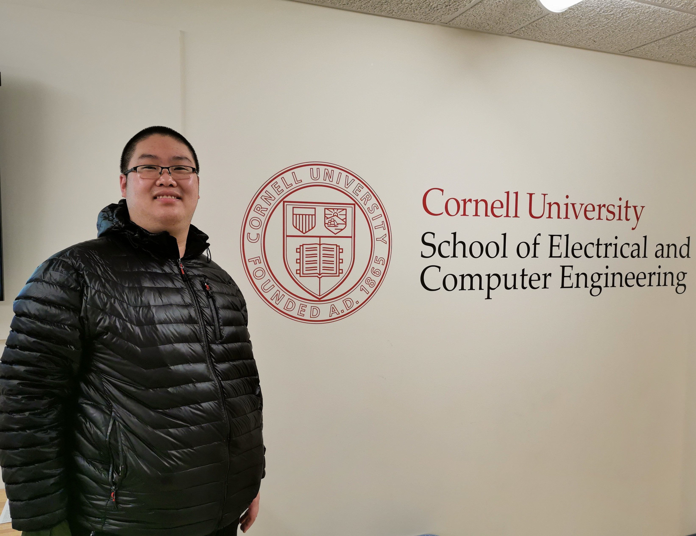

Jingwen Ye (叶景文)
|

|
Firmware Development Engineer
Intel Co,Ltd.
Minhang, Shanghai, 200241, P.R. China
Email: yejingwen0226@qq.com
[CV]
[GitHub] [中文主页]
|
About me
My hometown is Harbin, Heilongjiang. During the oversea study, I majored in Computer Engineering. The main courses
are: Machine Learning, Computer Vision, Operating System, Embedded System, Computer System Programming, Computer
Architecture and etc.
Educations

|
Cornell University
Ithaca,
NY
|
|
|
University of Sydney Sydney, NSW, AU
|
|
|
Harbin Institute of Technology Harbin, Heilongjiang, China
|